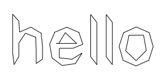
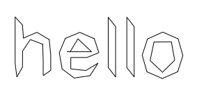

Posted by Tom De Smedt on Oct 31, 2007
Luckily you can achieve the same effect with standard NodeBox commands and without having to dig around in Cocoa. The simplify() command below redraws each contour in a path with a number of straight line segments. The less precision, the less line segments:

Hi Giorgio,
I think the correct second line in your flatten() command should be:
p.path = p.path.bezierPathByFlatteningPath()However, this also doesn't work. Don't know why.
Luckily you can achieve the same effect with standard NodeBox commands and without having to dig around in Cocoa. The simplify() command below redraws each contour in a path with a number of straight line segments. The less precision, the less line segments:
def simplify(path, precision=0.5): beginpath(0, 0) for contour in path.contours: first = True n = contour.length * precision * 0.4 for pt in contour.points(int(n)): if first: moveto(pt.x, pt.y) first = False else: lineto(pt.x, pt.y) closepath() return endpath(draw=False) stroke(0) nofill() fontsize(120) p = textpath("hello", 50 , 120) p = simplify(p, precision=0.12) drawpath(p)


Flattening paths
Posted by Giorgio O. on Oct 27, 2007Hello everybody,
on http://developer.apple.com/documentation/Cocoa/Reference/ApplicationKit/Classes/NSBezierPath_Class/Reference/Reference.html#//apple_ref/occ/clm/NSBezierPath/defaultFlatness
I've found the "bezierPathByFlatteningPath" command.
I've used it to reduce to straight lines some paths (the text 'hello' in the example below). Everything is fine on screen, but the exported pdf has the original 'good' text vector paths instead of the one made of straight lines that I see on screen in NB.
Any idea of the reason why this happens?
ciao
G.